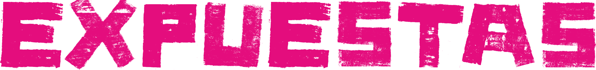

Bienvenida a una experiencia inmersiva bajo tierra. Aquí convergen seguridad, desigualdad y movilidad urbana en el transporte público de la Ciudad de México.
Navega por los testimonios y datos que revelan las realidades de las mujeres en el metro.
La inseguridad no es solo un dato objetivo. Es una experiencia vivida, una hipervigilancia constante, una restricción invisible que define los trayectos diarios de miles de mujeres.
Miedo, adaptación, estrategias de supervivencia urbana.
No todas las mujeres experimentan la misma realidad. El contexto socioeconómico y territorial altera fundamentalmente la percepción del riesgo, la duración del trayecto, la exposición a la violencia.
Explorar documentación